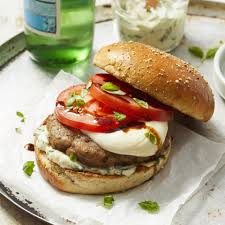

Caprese Turkey Burgers

Description
Patties seasoned with italian spices, then topped with juicy tomatoes
drizzled with balsamic, fresh basil, and fresh mozarella.
Serve this burger with a simple side salad for a healthy dinner full
of fresh flavors.
Ingredients
- 1 lb ground turkey
- 2 large tomatoes
- 8oz mozzarella
- 2 fistfuls fresh basil
- 1/4 cup pesto
- 1/2 cup breadcrumbs
- 1 egg
- 1 Tbps balsamic glaze
- 1/2 Tbps garlic powder
- 1 tsp onion powder
- Salt to taste
- Pepper to taste
Steps
-
Mix ground turkey, pesto, breadcrumbs, egg, garlic powder, onion powder,
salt, and pepper into a bowl until homogenous.
- Form ground turkey mixture into patties, 4-6 patties.
-
Grill patties directly on a flame at 425 degrees for 12 minutes, flipping once.
Cook to an internal temp of 165.
- Slice tomatoes and mozzarella
-
Once patties are done, serve on a bun with tomato, mozzarella, and basil leaves.
Drizzle with balsamic glaze and serve.